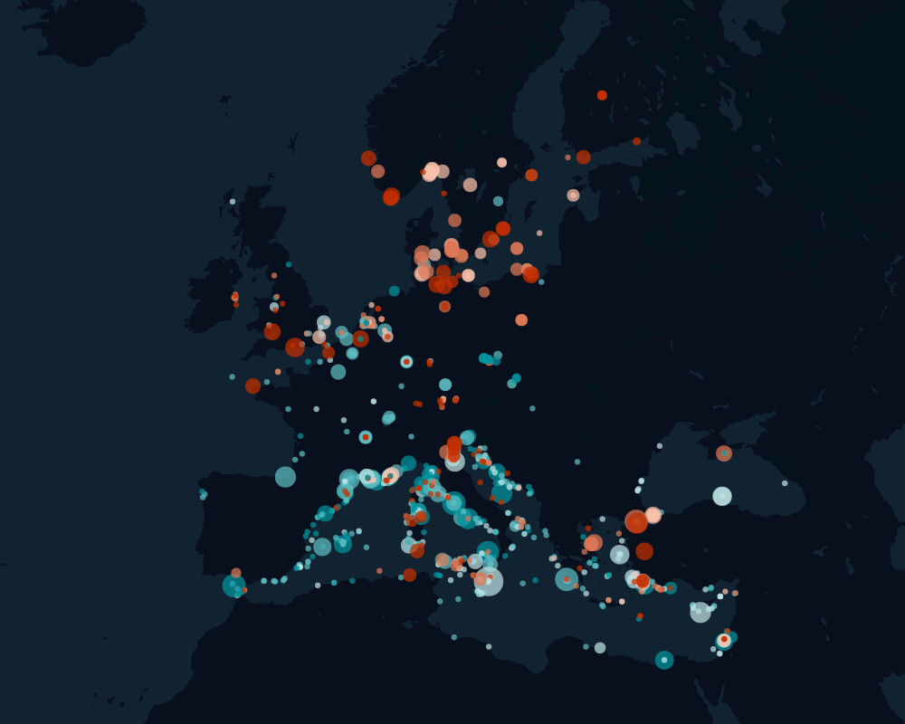
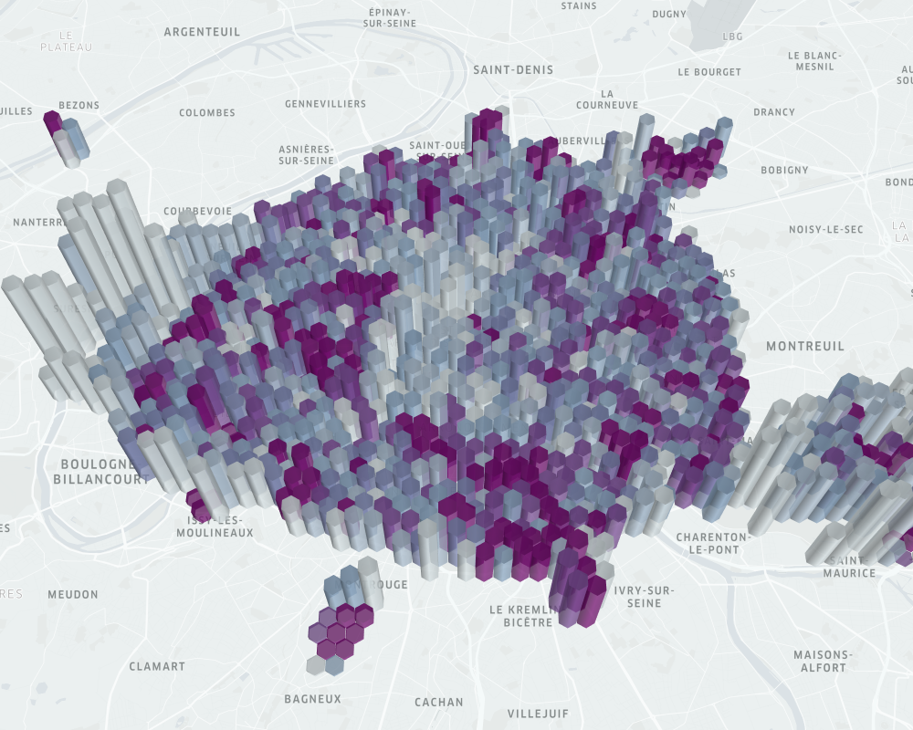
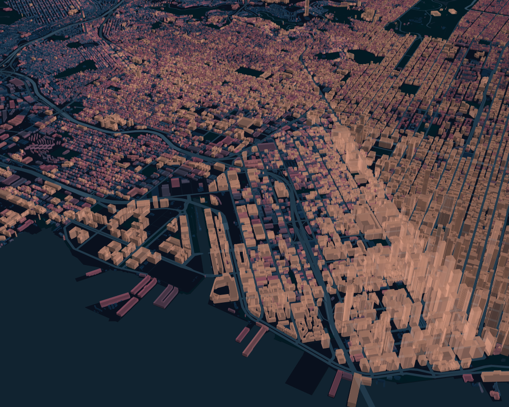

Examples
Point Layer: Shipwrecks from DARMC
The first example is to plot the location and date of a number of shipwrecks around Europe. The data come from the Digital Atlas of Roman and Medieval Civilizations at Harvard.
We download the data using Downloads and convert it to a DataFrame using CSV.jl:
using KeplerGL
using CSV, DataFrames
using ColorBrewer
using Downloads
shipwrecks_url = "https://docs.google.com/spreadsheets/d/11fk5YeQ4eFOnYSBNpUdHp4TP42gJ7wY5/gviz/tq?tqx=out:csv&sheet=GeoDatabase"
http_response = Downloads.download(shipwrecks_url);
df = CSV.File(http_response) |> DataFrameWe drop all shipwrecks for which we don't have geocoordinates:
dropmissing!(df, [:Latitude, :Longitude])We now create the KeplerGLMap. We want to choose our camera position freely and therefore choose center_map=false. We also need a Mapbox token, which can be obtained by creating and account on Mapbox.com.
token = "<enter your token here>"
m = KeplerGL.KeplerGLMap(token, center_map=false, read_only=true)We then add the point layer to the map. We color the points depending on the End_Date and choose the radius to depend on Width, noting that this means that many shipwrecks with missing information will get dropped:
KeplerGL.add_point_layer!(m, df, :Latitude, :Longitude,
color_range=parse.(Colorant, ["#00939C","#5DBABF","#BAE1E2","#F8C0AA","#DD7755","#C22E00"]),
color_field=:End_Date,color_scale="quantize",opacity=0.5,
radius_field = :Width, radius_fixed = false, radius_range = [10,50])Finally, we add some aesthetics to the map. We choose Mapbox's dark theme, disable the labels on the map, and remove the legend.
# disable map legend
m.window[:map_legend_show]=false
# disable the labels on the map
m.config[:config][:mapStyle][:visibleLayerGroups][:label]=false
# use a dark basemap
m.config[:config][:mapStyle][:styleType]="dark"Then we set the zoom and camera position:
m.config[:config][:mapState][:zoom] = 3.2109865005249962
m.config[:config][:mapState][:latitude] = 49.989862149983416
m.config[:config][:mapState][:longitude] = 12.118123312294815Now we're ready to render and export the map to a PNG.
w = KeplerGL.render(m)
KeplerGL.export_image(w, "shipwrecks.png")
Hexbin: the Trees of Paris
Our objective here is to create a hexagon plot that shows the density and average height of trees in Paris.
First, we load a couple of packages that we need:
using KeplerGL
using CSV, DataFrames
using ColorBrewerOur data come from the Direction des Espaces Verts et de l'Environnement of the City of Paris (more info here). We download the data using the Downloads package (which is part of Julia's stdlib since Julia 1.6) and use CSV.jl to convert it into a DataFrame.
using Downloads
trees_url = "https://opendata.paris.fr/api/explore/v2.1/catalog/datasets/les-arbres/exports/csv?lang=fr&timezone=Europe%2FBerlin&use_labels=true&delimiter=%3B"
http_response = Downloads.download(trees_url);
df = CSV.File(http_response) |> DataFrameThe geo_point_2d field contains a String with latitude and longitude separated by a comma. Again let's use CSV.jl to separate out the two:
v= map(x -> "$x\n", df.geo_point_2d)
df2 = CSV.File(IOBuffer(string("lat,lon\n",string(v...)))) |> DataFrame
df.Latitude = df2.lat
df.Longitude = df2.lonNow we have the data ready to be plotted. First, create the KeplerGLMap. We want to choose our camera perspective freely, so we set center_map=false. We also need to have our Mapbox token ready:
token = "<enter your token here>"
# `read_only=true` removes the button to add layers etc
m = KeplerGL.KeplerGLMap(token, center_map=false, read_only=true)We want to have a nice plot without annoying buttons on the right, so we turn on 3d but turn off all buttons:
# Switch on 3d but remove the button
m.window[:toggle_3d_show] = false
m.window[:toggle_3d_active] = true
# Don't show the legend or the button for it
m.window[:map_legend_show] = false
m.window[:map_legend_active] = false
# Remove button for layers
m.window[:visible_layers_show] = false
m.window[:visible_layers_active] = falseNow we can create the hexbin layer. We want darker colors for a higher density of trees, and the height of the columns depending on the average height of the trees.
KeplerGL.add_hexagon_layer!(m, df, :Latitude, :Longitude,
opacity = 0.5,
radius = 0.2, color_range = ColorBrewer.palette("BuPu",6), color_aggregation = "average", coverage = 0.95,
height_field = Symbol("HAUTEUR (m)"), height_scale = "linear" , height_range=[0,1000], enable_3d=true)Finally, we set the camera position and angle. A nice way to get the right values is to first create the map interactively with Kepler.gl and then read off the map config values from the "export map" -> "export as JSON" menu.
m.config[:config][:mapState][:latitude] = 48.85830271617524
m.config[:config][:mapState][:longitude]= 2.338470433888891
m.config[:config][:mapState][:zoom] = 11.364401854866383
m.config[:config][:mapState][:pitch] = 30.121874231314532
m.config[:config][:mapState][:dragRotate] = trueNow we're ready to render the map. We'll also export the image as a PNG file. Ideally, run the export function immediately after the render, otherwise there are sometimes error messages showing up.
w = KeplerGL.render(m)
# Export the image
KeplerGL.export_image(w, "trees.png")
Polygon: Building Footprints of San Francisco
This example is a bit bigger. We're going to download the building footprints of San Francisco and visualize them.
using KeplerGL
using Colors
using CSV, DataFrames
using DownloadsNote that the data for this example is much larger (about 200mb), so downloading and displaying the data may take a while. We use again Downloads.jl to retrieve the data. Luckily it's already in a nice format.
sf_url = "https://data.sfgov.org/api/views/ynuv-fyni/rows.csv?accessType=DOWNLOAD"
http_response = Downloads.download(sf_url);
df = CSV.File(http_response) |> DataFrameNow set the Mapbox token
token = "..."Create the KeplerGLMap with the token, and set center_map=false to be able to choose the camera location and direction.
m = KeplerGL.KeplerGLMap(token, center_map=false)Switch on 3d, but hide the button:
m.window[:toggle_3d_show] = false
m.window[:toggle_3d_active] = trueCreate the polygon layer:
KeplerGL.add_polygon_layer!(m, df, :shape;
color_range = parse.(Colorant, ["#194266","#194266","#194266","#355C7D","#355C7D","#63617F","#916681","#C06C84","#D28389","#F8B195"]),
color_field = :hgt_meancm, color_scale = "quantile", opacity = 0.38,
height_field = :hgt_meancm, height_scale = "linear",
enable_3d = true, elevation_scale = 1.0, filled = true, outline = false)Disable the map legend:
m.window[:map_legend_show]=falseDisable the labels on the map:
m.config[:config][:mapStyle][:visibleLayerGroups][:label]=falseUse a dark basemap:
m.config[:config][:mapStyle][:styleType]="dark"Set the camera:
m.config[:config][:mapState][:latitude] = 37.774483242431074
m.config[:config][:mapState][:longitude]= -122.40122776087189
m.config[:config][:mapState][:zoom] = 13.744271777357321
m.config[:config][:mapState][:pitch] = 54.106924511460385
m.config[:config][:mapState][:bearing] = -124.5053380782918
m.config[:config][:mapState][:dragRotate] = trueRender the map and export the image. This may take a bit of time because our data are large:
w = KeplerGL.render(m);
KeplerGL.export_image(w, "sf.png")